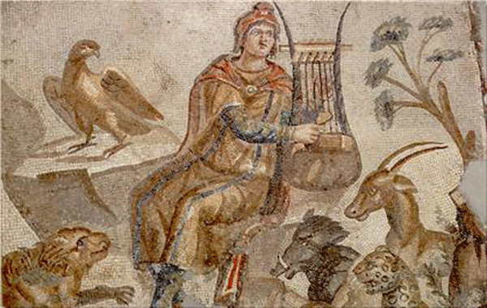

La poesia lirica rinascimentale fu una forma significativa di letteratura durante il periodo rinascimentale, che andò dal XIV al XVII secolo. Era caratterizzato dall'attenzione alle emozioni e ai sentimenti personali, spesso espressi in prima persona. Il termine "lirica" deriva dalla parola greca "lyrikos", che significa "cantare con la lira". Durante il Rinascimento, la poesia lirica era spesso musicata e la sua struttura, funzione o tema potevano variare. La poesia lirica di questa periodo fu creato dai pionieri della poesia cortese e dell'amor cortese, in gran parte senza riferimento al passato classico. In Italia, Petrarca sviluppò la forma del sonetto, che fu successivamente resa popolare da poeti come Sir Philip Sidney, Edmund Spenser e William Shakespeare in Inghilterra. In Francia, La Pléiade mirava a rompere con le precedenti tradizioni della poesia francese e iniziò a imitare le forme classiche greche e romane come le odi. La poesia lirica era popolare anche in altre parti d'Europa, come la Germania, dove Johann Wolfgang von Goethe e Friedrich Schiller erano poeti lirici notevoli. In Giappone, il naga-uta era una forma popolare di poesia lirica durante quest'epoca. Nel complesso, la poesia lirica rinascimentale era una forma significativa di letteratura che permetteva ai poeti di esprimere le proprie emozioni e sentimenti personali in modo creativo e artistico. . Durante questo periodo, ci fu un rinnovato interesse per i testi classici e le idee dell'antica Grecia e di Roma, che ebbero un profondo impatto sullo sviluppo della poesia lirica rinascimentale. Il sonetto è una poesia di 14 versi con uno schema di rima e un metro specifici, ed era una forma popolare di poesia lirica durante il Rinascimento. I sonetti di Petrarca furono scritti in lingua italiana ed erano caratterizzati dall'uso dello schema di rime ABBAABBA CDECDE e dall'attenzione ai temi dell'amore e dell'esperienza umana.
La poesia di Petrarca fu ampiamente ammirata e imitata da altri poeti del Rinascimento, tra cui il poeta inglese Geoffrey Chaucer. Chaucer era un contemporaneo di Petrarca e fu fortemente influenzato dall'uso della forma del sonetto da parte del poeta italiano e dalla sua attenzione ai temi dell'amore e dell'esperienza umana. La poesia di Chaucer era scritta in lingua inglese ed era caratterizzata dal suo uso del metro pentametrico giambico e la sua attenzione ai temi dell'amore, della natura e dell'esperienza umana. L'opera più famosa di Chaucer è "The Canterbury Tales", una raccolta di storie raccontate da un gruppo di pellegrini in viaggio verso la Cattedrale di Canterbury. Un altro influente poeta rinascimentale fu il poeta italiano Michelangelo Buonarroti, meglio conosciuto per il suo lavoro di pittore, scultore e architetto. Tuttavia, Michelangelo era anche un poeta di talento, e la sua poesia era caratterizzata dall'attenzione ai temi dell'amore, della morte e dell'esperienza umana. La poesia di Michelangelo era scritta in lingua italiana ed era caratterizzata dall'uso della terza rima schema di rime e il suo focus sui temi dell'amore, della morte e dell'esperienza umana. Lo schema di rima terza rima è uno schema di rima complesso che consiste in terzine intrecciate, o strofe di tre versi, con il primo e il terzo verso di ciascuna terzina che rima con il secondo verso della terzina successiva. Altri poeti rinascimentali degni di nota includono il poeta italiano Ludovico Ariosto, il poeta inglese Edmund Spenser e il poeta francese Pierre de Ronsard. Questi poeti diedero un contributo significativo allo sviluppo della poesia lirica rinascimentale e il loro lavoro ebbe un profondo impatto sul panorama letterario dell'epoca. In conclusione, la poesia lirica rinascimentale era un genere letterario popolare e influente caratterizzato dalla sua attenzione ai temi dell’amore, della natura e dell’esperienza umana. Il sonetto era una forma di poesia lirica particolarmente popolare durante il Rinascimento, e poeti come Francesco Petrarca, Geoffrey Chaucer e Michelangelo Buonarroti diedero un contributo significativo al suo sviluppo. Il Rinascimento fu un periodo di grande rinascita culturale e artistica in Europa, e il Lo sviluppo della poesia lirica rinascimentale fu una parte fondamentale di questa rinascita. La poesia di questo periodo era caratterizzata dall'uso di complessi schemi di rima, dalla sua attenzione ai temi dell'amore, della natura e dell'esperienza umana e dalla sua influenza sullo sviluppo delle lingue italiana, inglese e francese.
 <-- Home